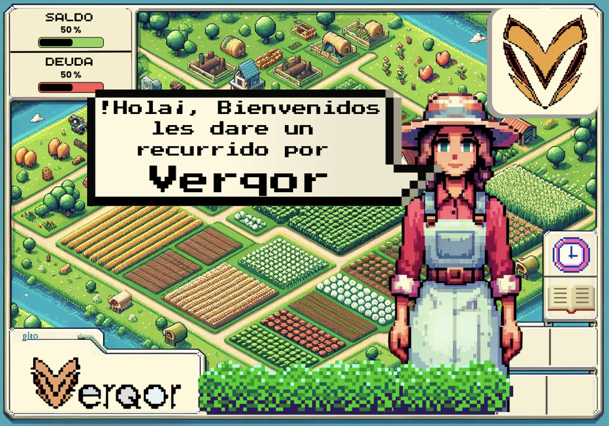

Verqor Game
Descripción del proyecto
Durante mi participación como Software Engineer en Verqor, desarrollé un juego web interactivo utilizando Unity, con el objetivo de involucrar a los usuarios finales en dinámicas educativas y de fidelización. El proyecto incluyó el diseño y despliegue de una base de datos en MySQL Workbench para recopilar y analizar datos de comportamiento del jugador, así como la implementación de un sistema backend utilizando Node.js y herramientas como Postman para pruebas de la API REST. La interfaz fue construida con React, HTML, CSS y JavaScript, asegurando una experiencia intuitiva y visualmente atractiva.
Retos enfrentados
Uno de los principales desafíos fue integrar un entorno de desarrollo de videojuegos (Unity) con tecnologías web modernas y servicios backend. Esto implicó una curva de aprendizaje para sincronizar la lógica del juego con la persistencia de datos en tiempo real. Además, trabajar bajo la metodología Agile exigía una comunicación constante y efectiva con el equipo, así como entregas parciales funcionales en lapsos cortos. Finalmente, garantizar la estabilidad de la API REST ante distintos flujos de usuario y escenarios de carga fue clave para la robustez del sistema.